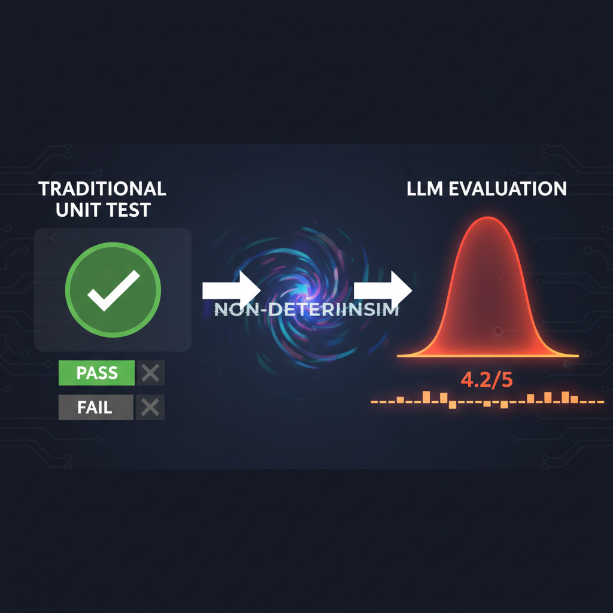

Você lança uma feature de LLM. Passa nos testes manuais. Um dia depois, um usuário posta screenshot do produto halucinando feio. Você ajusta o prompt, roda de novo, parece OK. Você consertou, ou só teve sorte?
Bem-vindo à frustração central de LLM engineering: você não pode mais rodar um teste e dar por encerrado.
Isso não é problema de debug. É problema de medição. E medição tem nome: evaluation.
Este post é adaptação enriquecida em PT-BR do "29 LLM Evaluation Concepts" de Anshuman Mishra e Neo Kim, com adições de stack de ferramentas atuais (Ragas, promptfoo, Braintrust, LangSmith), patterns de produção, e o framework de eval que uso pra todas as skills do Dev Team Kit.
Por que seus instintos de testing não funcionam aqui

1. O problema da não-determinismo
Escreve uma function. Chama com mesmo input duas vezes, recebe mesmo output. LLMs não funcionam assim. Mesmo prompt pode produzir resposta diferente toda vez. Às vezes pouco diferente. Às vezes completamente diferente.
Isso quebra algo mais profundo: seu modelo mental inteiro de testing assume determinismo. Você roda teste, passa ou falha. Com LLMs, teste que passa é data point, não veredito. Você não está testando uma function — está fazendo sample de uma distribuição de probabilidade. Uma amostra te diz quase nada.
2. O problema da correctness "fuzzy"
Quando regex casa, casa. Binário. Objetivo. Done. Mas qual é a resposta "certa" pra "summarize this support ticket empathetically"?
- A mais concisa?
- A com linguagem mais quente?
- A que captura todos os fatos-chave?
- A que reviewer humano daria nota mais alta?
Quality de LLM é multi-dimensional e subjetiva. Geralmente não há uma resposta correta. Há um range de respostas aceitáveis e um range de ruins. A linha entre eles é julgamento.
Você não pode medir o que não definiu. O que "bom" significa pro seu use case? Você precisa de resposta clara antes de avaliar qualquer coisa. Maioria pula essa etapa. Vem caçá-los depois.
3. O problema da regressão silenciosa
Você atualizou o prompt. Rodou algumas vezes. Outputs parecem melhores. Shippou. Mas qualidade de fato melhorou, ou você teve sorte com as amostras que checou?
Sem processo sistemático de eval, toda mudança de prompt é aposta cega. Você pode estar melhorando. Pode estar consertando um failure mode enquanto introduz outro. E não tem como saber.
Em software tradicional, CI pega regressões antes do usuário. Em LLM engineering, não existe equivalente direto. Pessoas confiam no feeling e em spot-checks manuais. Descobre regressão quando usuário reclama!
Vocabulário primário — 9 conceitos
4. Criteria
Dimensões de qualidade que importam pro seu use case específico. Bot de suporte se importa com:
- Endereça o problema real do usuário?
- Tom é empático?
- Evita escalation desnecessária?
Tool de geração de código se importa com algo completamente diferente:
- Output é sintaticamente válido?
- Segue convenções do projeto?
- De fato resolve o problema?
Mesma tecnologia, criteria inteiramente diferentes. Isso é decisão de produto, não técnica. Você não pode terceirizar pro modelo ou framework. Alguém do time precisa sentar e responder: o que um output bom de fato parece aqui?
5. Quality Dimensions (vocabulário padrão)
- Relevance: addressou o que foi perguntado? Resposta pode ser acurada, bem escrita, e completamente off-topic.
- Coherence: faz sentido logicamente? Sem contradições, sem pivotes mid-sentence.
- Factual Accuracy: o que diz é de fato verdade? Distinto de relevance — resposta pode ser relevante e errada.
- Helpfulness: dá o que o usuário precisa pra avançar? Diferença entre tecnicamente correto e útil.
- Safety: evita conteúdo prejudicial, biased, inapropriado?
6. Rubric
Operacionaliza os criteria. Em vez de criterion vago "helpfulness", rubric quebra em perguntas específicas e pontuáveis:
- Resposta direta à pergunta? (0-5)
- Evita hedging desnecessário? (0-5)
- Menos de 200 palavras? (sim/não)
- Usuário não-técnico entende? (0-5)
É checklist de code review pra LLM outputs. Rubric é o que torna avaliação reproduzível. Dois reviewers diferentes (humano ou AI) devem chegar em scores similares.
7. Test Cases
Pair input/output que forma uma unidade da sua eval. Input é prompt (idealmente representativo de tráfego real). Output é resposta de referência OU o output ao vivo que você vai pontuar.
Pense em test cases como unit tests — exceto que failing test não significa que output estava errado. Significa que pontuou abaixo do threshold definido na rubric.
8. Golden Set
Coleção curada de test cases de alta qualidade. Sua ground truth. Construir bom golden set é mais difícil que parece.
Instinto: escrever exemplos você mesmo, cobrindo casos de uso antecipados. É um começo. Mas usuários fraseiam coisas diferente do que você espera, batem em edge cases que não imaginou, e usam features de formas criativas.
Solução: seed com queries reais de produção. Anonimizadas, limpas, representativas. Trate o golden set como artefato crítico do sistema — versione, atualize quando descobrir novos failure modes.
9. Pass/Fail Threshold
Scores de eval raramente são binários. Rubric produz score 1-5 ou 0-10. Threshold converte score em decisão. Score abaixo de 3 (numa escala 1-5) = falha.
Setar o threshold certo é product call: quanto de imperfeição usuários toleram? Quão severas são falhas no domínio? Custo de falsos positivos?
Threshold baixo demais = ship de lixo. Alto demais = não ship nada.
10. Eval Coverage
O quanto seu golden set reflete inputs reais de usuários. Maioria dos times tem cobertura baixa e não sabe. Constroem golden set de exemplos próprios — happy path + alguns edge cases óbvios. Enquanto isso, tráfego de produção é totalmente diferente.
Cobertura baixa = sua suite de eval é otimista. Você passa em testes mas falha com usuários. O fix não é escrever mais exemplos sozinho. É samplear de produção regularmente, revisar falhas, adicionar inputs que expuseram fraquezas.
11. Temperature, Top-p, Reproducibility
Settings de sampling afetam eval results diretamente. Rode evals em temperature=1.0 e o mesmo prompt pode passar hoje, falhar amanhã. Standard: temperature=0 durante eval runs. Trava determinismo.
Se precisa de variância criativa em produção, teste em sua temperatura de produção — só saiba que aceita resultados mais ruidosos.
12. Rigor Estatístico
Mesmo em temperature=0, uma única eval run não basta. Seu golden set é amostra do espaço de input. Essa amostra tem variance própria. Set de exemplos infeliz pode fazer prompt bom parecer ruim. E vice-versa.
Rode muitas avaliações em samples diferentes. Reporte mean E variance, não só score. Mudou prompt e score foi de 4.1 pra 4.3? Pode ser melhoria real. Pode ser ruído. Sem dados de variance, você não sabe.
Os 3 modos de scoring
13. Human Evaluation — gold standard
Humano revisa output usando rubric e dá score. Lento, caro, pode ser inconsistente. Mas é o mais próximo de ground truth. Você não pode usar humanos pra toda eval run — não escala.
Use estrategicamente: construir/validar golden set, checar acurácia das evals automatizadas periodicamente, debugar quando algo quebra e você não sabe por quê.
14. Heuristic / Code-Based Evaluation — barato e rápido
Regras escritas em código. Funciona pra coisas binárias e objetivas:
- Output é JSON válido?
JSON.parse()sucesso? - Contém keywords obrigatórios?
- Está abaixo de N tokens?
- Cita fonte específica?
- Matches regex de PII pra rejeitar?
Bibliotecas tipo OpenAI Evals e promptfoo facilitam. Custo: ~zero. Velocidade: milhões de eval/dia. Limitação: só pega o objetivo.
15. LLM-as-Judge — a escala que viabiliza CI
Usa um LLM (idealmente mais forte que o avaliado) pra pontuar outputs usando a rubric. Paper canônico (Zheng et al., 2023): GPT-4 como judge tem ~85% de agreement com humanos em tarefas comuns.
Patterns:
- Pairwise comparison: judge compara duas respostas, escolhe melhor. Mais robusto que scoring absoluto.
- Reference-based: judge compara com resposta-padrão.
- Rubric-based: judge dá score em cada dimensão da rubric.
Armadilhas: biases (position bias, verbosity bias, self-preference), inconsistência. Mitigações: rodar judge múltiplas vezes, alternar ordem, validar contra humanos periodicamente.
Métricas específicas pra RAG
Sistemas RAG têm vocabulary próprio. Ragas popularizou:
- Faithfulness: a resposta gerada é grounded nos chunks recuperados? (anti-hallucination)
- Answer Relevancy: a resposta endereça a pergunta?
- Context Precision: dos chunks recuperados, quantos são realmente relevantes?
- Context Recall: dos chunks necessários, quantos foram recuperados?
- Context Entity Recall: das entidades-chave, quantas o retrieval pegou?
Combinação típica: faithfulness + answer relevancy + context precision = "RAG triad" (popularizado pela TruLens).
Métricas específicas pra Agents
Agents adicionam complexidade:
- Task completion rate: agent terminou a tarefa?
- Tool call accuracy: chamou a tool certa?
- Tool argument correctness: passou argumentos corretos?
- Trajectory similarity: o caminho até o resultado foi razoável?
- Cost per task: tokens, latência, número de steps.
- Recovery from failure: agent se recuperou quando tool falhou?
Frameworks que cobrem isso: LangSmith, Langfuse, Braintrust.
Patterns de produção que importam
1. Eval-driven development
Antes de mudar prompt, escreva o eval que prova que a mudança melhorou. Sem isso, você está chutando.
2. Continuous evals (CI/CD pra LLM)
Toda PR que toca prompt, modelo ou config deve rodar suite de eval automaticamente. Falhou abaixo do threshold → block merge. Frameworks: promptfoo no CI, LangSmith, Braintrust.
3. Production sampling + offline eval
Capture queries reais de produção (anonimizadas), aleatoriamente. Rode eval offline contra elas regularmente. Falhas viram novos test cases no golden set.
4. Multi-judge consensus
Quando custo permite, use múltiplos judges diferentes (GPT-4 + Claude + Gemini) e tome o majority vote. Reduz bias específico de modelo.
5. Eval feedback loop com usuário
Thumbs up/down de usuário → vira sinal pra eval. Sample respostas com thumbs down pra revisão humana. Sample com thumbs up pra confirmar golden set.
Stack pra começar (do trivial ao maduro)
Nível 1: trivial
- promptfoo (CLI, free): rode no terminal, output YAML, integra com CI.
- Golden set: arquivo CSV com 30 exemplos.
- Eval: heurístico + LLM-as-judge com GPT-4o-mini.
Nível 2: ferramenta dedicada
- LangSmith (Anthropic-ish, paga): trace, dataset, eval, comparação.
- Langfuse (open-source, self-host): mesmo que LangSmith, mais barato em escala.
- Braintrust: bom DX, foco em comparação de prompts.
Nível 3: RAG-specific
- Ragas (open-source): métricas RAG canônicas (faithfulness, etc).
- TruLens: dashboards + RAG triad nativo.
- DeepEval: PyTest-style.
Nível 4: enterprise
- Arize Phoenix: observability + eval integrados, free tier generoso.
- Patronus AI: foco em compliance e safety evals.
- Galileo: eval + observability ML/LLM unificado.
O framework eval em 5 passos pra começar amanhã
- Defina criteria de qualidade. Sente com PM/product owner. Escreva 5-8 critérios específicos. Sem isso, nada faz sentido.
- Construa rubric simples. Cada critério vira 1-3 perguntas pontuáveis. Comece com escala 1-5.
- Monte golden set inicial (30-100 exemplos). 50% sintético, 50% real (queries de prod anonimizadas).
- Implemente eval automático. promptfoo + LLM-as-judge é o "good enough" inicial. Rode no CI.
- Sample produção semanalmente, atualize golden set. Falhas viram novos cases. Aumente o set continuamente.
Em 4-6 semanas você tem um sistema de eval que de fato detecta regressão antes do usuário. Em 3 meses, está rodando A/B testing de prompt com confidence statistical.
Conclusão
Eval não é "nice to have" pra projetos LLM sérios. É a única coisa que separa "ship and pray" de engenharia. Sem eval contínuo, você está navegando no nevoeiro — todas as decisões de prompt, modelo, e arquitetura são baseadas em vibes.
A boa notícia: a maioria das ferramentas é open-source ou tem free tier generoso. promptfoo no CI + golden set num CSV te leva 80% do caminho. Investimento operacional: 2-3 dias pra setup inicial, 1-2 horas/semana pra manutenção. Retorno: dezenas de horas economizadas em debug de produção e usuários reclamando.
Fonte original: "29 LLM Evaluation Concepts Every Engineer Needs to Know" por Anshuman Mishra (lead de evals na Zomato) e Neo Kim, publicado em The System Design Newsletter em 27 de abril de 2026. Esta adaptação em PT-BR cobre os 15 conceitos primários e expande pesadamente com métricas RAG (Ragas), agent evals, patterns de produção e stack de ferramentas atualizada. Recomendo seguir o newsletter AI Proof do Anshuman e o "Your AI Product Needs Evals" do Hamel Husain — referência canônica em eval pragmático.